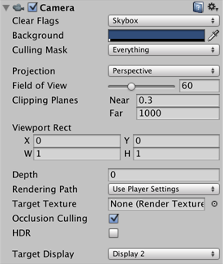

Multi-display
Multi-display allows you to display up to 8 different camera views of your application on up to 8 different monitors at the same time. You could use this for PC games, arcade game machines and simple installations for public display.
Multi-display only runs in standalone mode, and is supported on Windows, Mac OS X and Linux.
Previewing Multi-display in your project
To see the different monitor displays:
Set each Camera to display to a specific monitor, using its Inspector. You can assign between 1 and 8 display monitors via the Target Display option (see Fig. 1).

You can then preview each display in the Game View, using the drop-down Display menu in the top left-hand corner of the view (see Fig. 2).

Activating Multi-display
The default display is one monitor, so when you run your application, you need to explicitly activate any additional displays via scripting, using Display.Activate. You need to explicitly activate each additional display and, once activated, you cannot deactivate them.
The best time to activate additional displays is upon creating a new Scene. A good way to do this is to attach a script component to the default Camera. Make sure you call Display.Activate only once during the startup. You may find it helpful to create a small initial scene to test it.
Example script
using UnityEngine;
using System.Collections;
public class DisplayScript : MonoBehaviour
{
// Use this for initialization
void Start()
{
Debug.Log("displays connected: " + Display.displays.Length);
// Display.displays[0] is the primary, default display and is always ON.
// Check if additional displays are available and activate each.
if (Display.displays.Length > 1)
Display.displays[1].Activate();
if (Display.displays.Length > 2)
Display.displays[2].Activate();
...
}
// Update is called once per frame
void Update()
{
}
}
API support
The following UnityEngine.Display API functions are supported:
public void Activate()
This activates a specific display on the current monitor's width and height. This call must be made once upon starting a new Scene. It can be called from a user script attached to a Camera or dummy GameObject in a new scene.
public void Activate(int width, int height, int refreshRate)
Windows only: This activates a specific display on a custom monitor's width and height.
Controlling monitor display positions
By default, your user's computer sorts the relative positions of its display monitors based on its X, Y virtual desktop. To override this so that your application displays without any sorting, start your application from the command line and use the command line flag:
-multidisplay